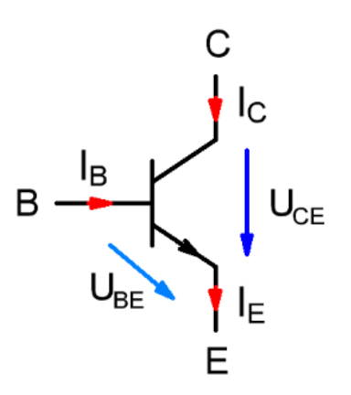
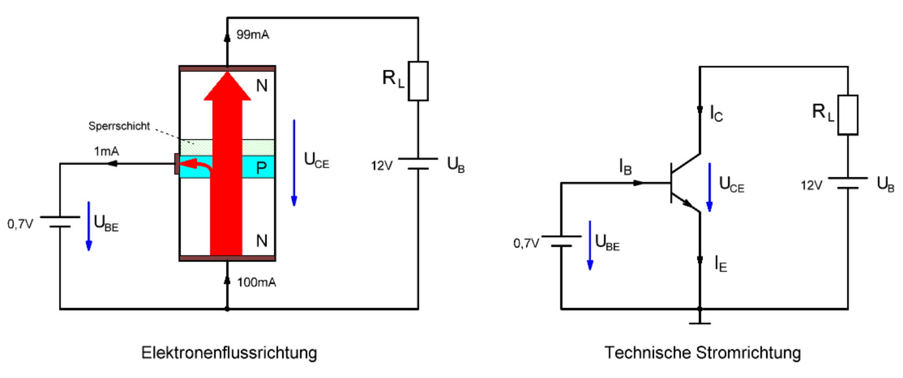
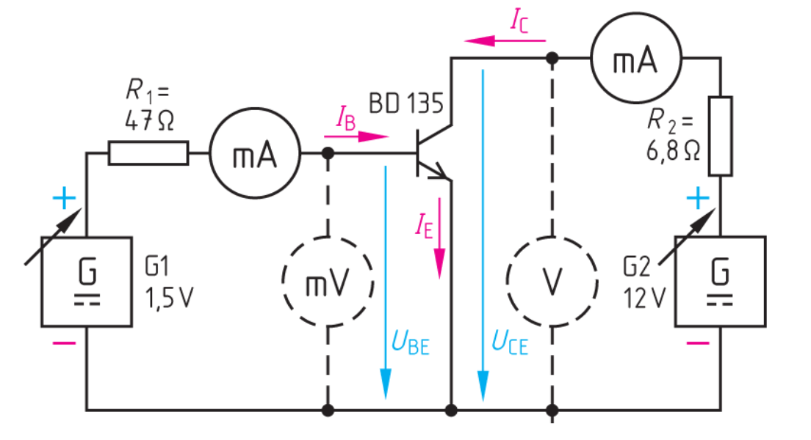
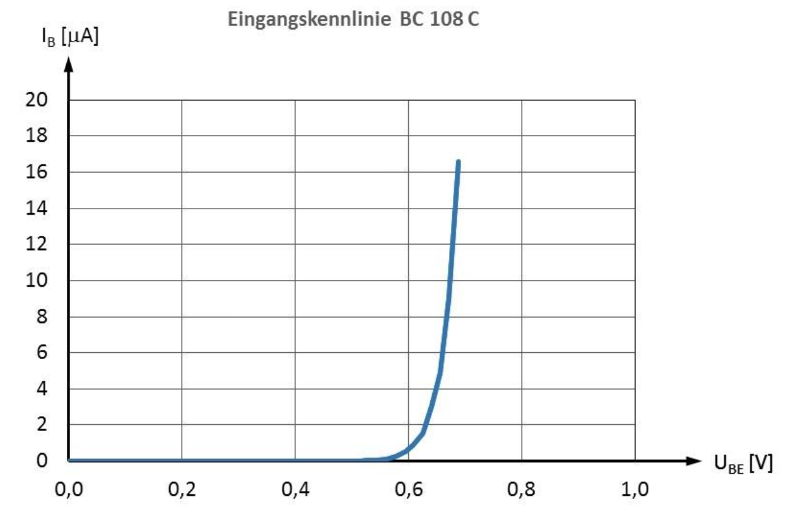
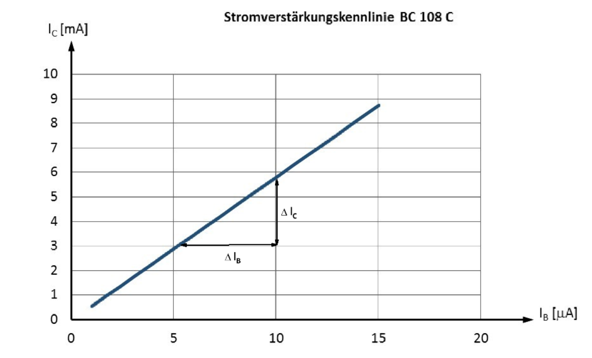
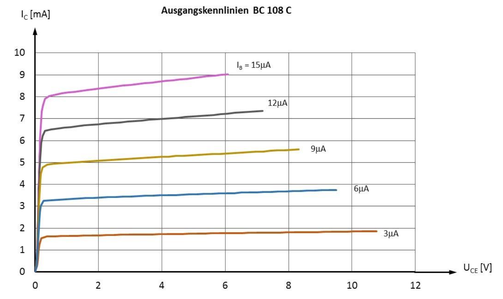
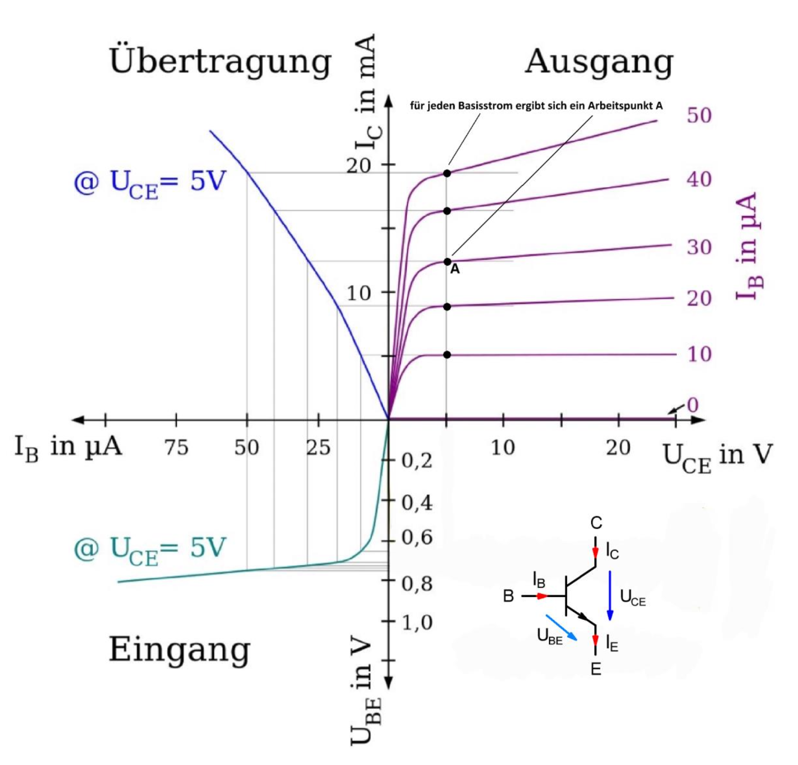

Transistor
Aufbau
Der NPN-Transistor besteht aus zwei N-leitenden Zonen, zwischen denen sich eine schmale P- leitende Zone befindet. Die drei Schichten und ihre zugehörigen Anschlüsse werden bei den bipolaren Transistoren als Emitter $E$, Basis $B$ und Kollektor $C$ bezeichnet. Der Emitter liefert die Ladungsträger. Der Kollektor sammelt die Ladungsträger wieder ein. Die Basis ist die Steuerelektrode. Im Prinzip ist der Aufbau des Transistors ähnlich wie zwei gegensinnig geschaltete Dioden. Ein Transistor kann aber nicht aus zwei getrennten Dioden aufgebaut werden, da die Basis nur einige $\mu m$ dick sein darf.

Schaltzeichen
Hier abgebildet sind das Schaltzeichen eines Transistors sowie alle Ströme und Spannungen.
Funktionsweise
Im NPN-Transistor befinden sich zwei PN-Übergänge. Es entstehen also zwei Sperrschichten in welchen sich keine freien Ladungsträger befinden. Ist die Basis-Emitter-Spannung $U_{BE} = 0V$ oder kleiner als die Schleusenspannung $U_S \simeq 0,7V$ der Basis-Emitter-Strecke, so sperrt der Transistor und es flieβt kein Strom $I_B = 0$, $I_C = 0$. Wird die Basis-Emitter-Spannung UBE größer als die Schleusenspannung $U_S \simeq 0,7V$ der Basis- Emitter-Strecke, so beginnt der Transistor zu leiten. Es flieβt ein großer Strom $I_C$ vom Kollektor zum Emitter und ein sehr kleiner Strom $I_B$. Die Emitterzone ist beim Bipolartransistor stark dotiert, die Kollektorzone etwas weniger. Die auβerordentlich dünne Basisschicht enthält nur eine geringe Anzahl Fremdatome. Flieβt ein Basisstrom $I_B$, überfluten vom Emitter her viele Elektronen die dünne Basisschicht. Da diese Schicht nur schwach dotiert ist, können nur wenige Elektronen mit Löchern rekombinieren. Es flieβt nur ein schwacher Basisstrom. Die meisten Ladungsträger gelangen durch das starke elektrische Feld der Basis-Kollektor-Sperrschicht zum Kollektor, wodurch ein hoher Kollektorstrom entsteht. Er kann um den Faktor 10 bis 500 mal größer sein als der Basisstrom.
Mit einem kleinen Basisstrom $I_B$ kann somit ein großer Kollektorstrom $I_C$ gesteuert werden. Dies erklärt die Verstärkungswirkung des Transistors. Um den kleinen Basisstrom $I_B$ in einen großen Kollektorstrom $I_C$ zu verstärken, muss natürlich eine externe Energiequelle zur Verfügung stehen, die den gröβeren Kollektorstrom auch liefern kann. Diese externe Energiequelle ist die Versorgungsspannung $U_B$, hier eine Batterie der Transistorschaltung. Der Emitterstrom $I_E$ ist die Summe aus Kollektorstrom $I_C$ und Basisstrom $I_B$.
Formel
$$ I_E = I_C + I_B $$wobei:
$$I_B \ll I_C $$also fast vernachlässigbar
Fazit
Ein kleiner Basisstrom steuert einen großen Kollektorstrom.
Bestimmung der Kennlinien
Wie bei einer Diode lassen sich auch bei einem Transistor Kennlinien messtechnisch mit der folgenden Versuchsschaltung aufnehmen:
Eingangskennlinie
Der Zusammenhang zwischen dem Basisstrom $I_B$ und der Basis-Emitterspannung $U_{BE}$ wird als Eingangskennlinie eines Transistors bezeichnet. Weil es sich hierbei um einen PN-Übergang handelt ist die Kennlinie identisch mit einer Diodenkennlinie.
Die Eingangskennlinie hat den Verlauf einer in Durchlassrichtung betriebenen Diode. Für Siliziumtransistoren ergibt sich eine Schleusenspannung von ungefähr 0,65$V$. Erst nach Überschreiten der Schleusenspannung kann ein Basisstrom flieβen.
Stromsteuerkennlinie, Stromverstärkungskennlinie
Die Stromsteuerkennlinie gibt den Zusammenhang zwischen Kollektorstrom $I_C$ und Basisstrom $I_B$ an.
Gleichstromverstärkung
Das Verhältnis zwischen Kollektorstrom $I_C$ und Basisstrom $I_B$ wird als Gleichstromverstärkung $B$ bezeichnet.
Formel
$$ B = \frac{I_C}{I_B} $$Ausgangskennlinien
Die Ausgangskennlinie gibt den Zusammenhang zwischen $I_C$ und $U_{CE}$ bei einem konstanten Basisstrom $I_B$ an. Weil dieser Zusammenhang für jeden Basisstrom ändert, gibt es für jeden Basisstrom eine eigene Kennlinie. Man erhält somit ein Ausgangskennlinienfeld.
Grenzwerte
Jeder Transistor hat natürlich auch Grenzwerte die nicht überschritten werden dürfen, ansonsten wird der Transistor zerstört.
-
maximaler Kollektorstrom $I_{Cmax}$
-
maximaler Basisstrom $I_{Bmax}$
-
maximale Kollektor-Emitter-Spannung $U_{CEmax}$
-
maximale Verlustleistung $P_{Vmax}$, dies hängt von der Kühlung des Transistors ab
$$ P_V = U_{CE} \cdot I_{C} + U_{BE} \cdot I_B $$
mit:
Vierquadranten-Kennlinienfeld
Werden die 3 Kennlinien zu einem so genannten Vierquadranten-Kennlinienfeld zusammengefügt, so erkennt man die Verstärkungswirkung. Legt man eine konstante Betriebsspannung $U_{CE}$ von zum Beispiel $U_{CE}$ = 5$V$, an den Transistor und verändert die Eingangsspannung $U_{BE}$ zwischen 0,6$V$ und 0,8$V$, so ergeben sich verschiedene Basisströme $I_B$. Für jeden Basisstrom $I_B$ erhält man einen verstärkten Kollektorstrom $I_C$ und einen entsprechenden Arbeitspunkt $A$ auf einer Ausgangskennlinie.
